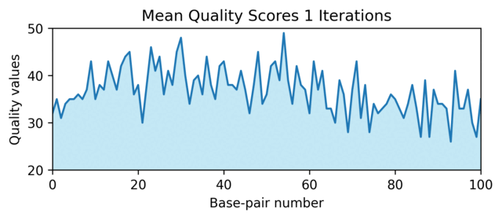

CLI Interface
The hts-synth command-line interface provides a simple way to generate synthetic high-throughput sequencing (HTS) read data from a reference sequence. This tool is designed for testing and exploration purposes, allowing you to simulate realistic sequencing errors and generate reads in various output formats.
Installation
Install the package to make the CLI tool available:
pip install -e .
Basic Usage
The basic syntax for the hts-synth command is:
hts-synth [OPTIONS] [NREADS] REF
Where:
NREADSis the number of reads to generate (default: 1)REFis the reference sequence from which to generate reads
Quick Start
Generate a single read from a reference sequence:
hts-synth ATCGATCGATCG
Generate 5 reads:
hts-synth ATCGATCGATCG 5
Generate reads with custom error probabilities:
hts-synth --insertion-probability 0.05 --deletion-probability 0.03 ATCGATCGATCG 10
Command Options
Reference position Options
-c, --reference-chrom STRThe chromosome within the reference genome where this read originates.
Example:
--reference-chrom chr1
-s, --reference-start INTEGERThe starting position within the reference genome where this read originates.
Default: 0
Example:
--reference-start 1000
-s, --reference-end INTEGERThe end position within the reference genome where this read originates.
Default: 0
Example:
--reference-end 1010
Error Probability Options
--insertion-probability FLOATThe probability that the generated read will include an insertion.
Default: 0.01 (1%)
Range: 0.0 to 1.0
Example:
--insertion-probability 0.05
--deletion-probability FLOATThe probability that the generated read will include a deletion.
Default: 0.01 (1%)
Range: 0.0 to 1.0
Example:
--deletion-probability 0.03
--substitution-probability FLOATThe probability that the generated read will include a substitution.
Default: 0.02 (2%)
Range: 0.0 to 1.0
Example:
--substitution-probability 0.04
Output Format Options
-f, --out-format [fq|seq|qual]Specify the format of the output.
Default:
fq(FASTQ format)Options:
fq- FASTQ format (includes header, sequence, separator, and quality scores)seq- Sequence onlyqual- Quality scores only
Example:
--out-format seq
Help Option
-h, --helpShow help message and exit.
Arguments
REFReference sequence from which to generate synthetic reads (required).
Type: String
Format: DNA sequence using standard nucleotide letters (A, T, C, G)
Example:
ATCGATCGATCGATCG
NREADSNumber of reads to generate (optional, default: 1).
Type: Integer
Default: 1
Example:
10(generates 10 reads)
Output Formats
FASTQ Format (fq)
The default output format includes all components of a FASTQ record:
@read-1a2b3c4d5e6f7890
ATCGATCGATCG
+
IIIIIIIIIIII
Where:
Line 1: Header line starting with
@followed by a unique read identifierLine 2: The DNA sequence
Line 3: Separator line (
+)Line 4: Quality scores in ASCII format
Sequence Only (seq)
Outputs only the generated DNA sequence:
ATCGATCGATCG
Quality Only (qual)
Outputs only the quality scores:
IIIIIIIIIIII
Examples
Basic Examples
Generate a single read:
hts-synth ATCGATCGATCGATCG
Generate 10 reads:
hts-synth ATCGATCGATCGATCG 10
Advanced Examples
Generate reads with high error rates:
hts-synth --insertion-probability 0.1 \
--deletion-probability 0.08 \
--substitution-probability 0.15 \
ATCGATCGATCGATCG 5
Generate reads starting from a specific reference position:
hts-synth --reference-start 1000 ATCGATCGATCGATCG 10
Output only sequences (useful for piping):
hts-synth --out-format seq 5 ATCGATCGATCGATCG
Combine with shell commands:
# Count the number of reads generated
hts-synth --out-format seq ATCGATCGATCGATCG 100 | wc -l
# Save to file
hts-synth ATCGATCGATCGATCG 1000 > synthetic_reads.fastq
Error Simulation
The tool simulates three types of sequencing errors:
- Insertions
Additional nucleotides inserted into the read that are not present in the reference.
- Deletions
Nucleotides from the reference that are missing in the read.
- Substitutions
Nucleotides in the read that differ from the corresponding position in the reference.
Each error type has an independent probability that can be configured using the respective command-line options. The error probabilities are applied during read generation to create realistic synthetic sequencing data.
Quality Scores
The tool automatically generates quality scores for each nucleotide in the synthetic reads. These scores follow standard FASTQ quality encoding and represent the confidence in each base call, simulating the quality scores produced by real sequencing instruments.
Using the NaiveQualModel with WelfordsRunningMean against publicly available data provides the following quality score distribution. The animation below shows the cumulatice mean of the quality sscores showing both the short term variation and the long term trend.
Use Cases
The CLI tool is particularly useful for:
Testing sequencing analysis pipelines with controlled synthetic data
Benchmarking alignment algorithms with reads containing known variants
Educational purposes to understand sequencing errors and their effects
Method development where specific error patterns need to be tested
Quality control by generating reads with known properties